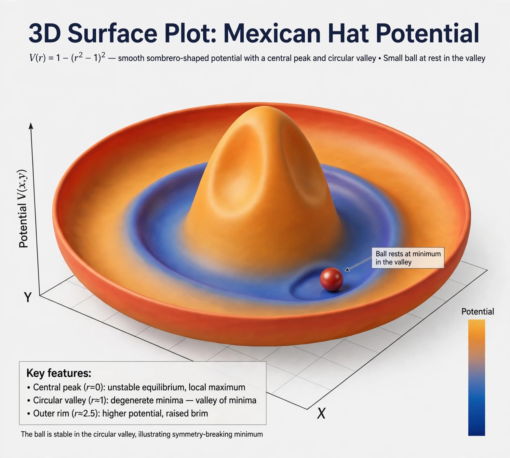

Higgs mechanism
| Proposed | 1964 |
|---|---|
| Key figures | Peter Higgs, François Englert, Robert Brout, Gerald Guralnik, C. R. Hagen, Tom Kibble |
| Result | Masses of W and Z bosons and fermions |
| Confirmation | Higgs boson discovered 2012 |

[Image: Graph of the 'Mexican hat' potential of the Higgs field, illustrating spontaneous symmetry breaking]In the Standard Model of particle physics, the Higgs mechanism is essential to explain the generation mechanism of the property 'mass' for gauge bosons. Without the Higgs mechanism, all bosons (one of the two classes of particles, the other being fermions) would be massless, but measurements show that the W± and Z⁰ bosons have relatively large masses.
The mechanism, involving spontaneous breaking of electroweak symmetry by a scalar field that is nonzero everywhere in the vacuum, was proposed in 1964 by three independent groups: Robert Brout and François Englert; Peter Higgs; and Gerald Guralnik, C. R. Hagen and Tom Kibble. The quantum of the field — the Higgs boson — was discovered at CERN in 2012, and Englert and Higgs received the 2013 Nobel Prize in Physics.
How it works
The Higgs field is a doublet of complex scalar fields with a 'Mexican hat' potential whose lowest-energy state lies away from zero. The electroweak symmetry SU(2) × U(1) is exact in the equations but hidden ('broken') by this vacuum state. Gauge bosons that interact with the field acquire mass — the W and Z take up three of the field's four components as their longitudinal polarisations — while the Photon remains massless. Fermions gain mass through separate Yukawa couplings to the same field, proportional to their masses, for reasons the theory does not explain.
Why it was needed
Simply adding mass terms for the W and Z bosons to the theory destroys its renormalisability and predicts unphysical high-energy behaviour (unitarity violation in W–W scattering at TeV energies). The Higgs mechanism supplies masses while keeping the theory consistent — or, if no Higgs boson had existed, something else would have had to intervene at the same energy scale. The discovery of a 125 GeV scalar at the Large Hadron Collider in July 2012, whose couplings closely match predictions, confirmed the mechanism in its minimal form.